SAP BTP Cockpit
Used as the platform entry point for understanding account, service, and destination setup context for the solution landscape.
Portfolio Project
AI-assisted customer complaint triage using SAP Generative AI Hub, SAP AI Launchpad, SAP Build Process Automation, and SAP S/4HANA process mapping.
Project Overview
This project demonstrates how customer complaints can be analysed using SAP Generative AI Hub, converted into structured triage fields, and used in SAP Build Process Automation for decision-table-based workflow routing. SAP S/4HANA Cloud Public Edition trial is used as an ERP process-context layer for mapping complaint outcomes to backend business processes.
SAP Services Used
Used as the platform entry point for understanding account, service, and destination setup context for the solution landscape.
Used to access and manage SAP AI capabilities, including evidence from model selection, prompt work, and orchestration-related screens.
Used to test complaint-analysis prompts and generate structured JSON output for category, priority, SLA risk, routing, and human-review decisions.
Used to model the workflow MVP with form fields, decision-table routing, release, deployment, testing, and monitoring evidence.
Used as the ERP process-context layer to map complaint outcomes to finance, sales, receivables, disputes, service, and supply chain areas.
Phase 1 Architecture Flow
Demo Videos
This recording shows the first prompt editor walkthrough in SAP AI Launchpad, including how complaint text is entered and tested against the triage prompt.
Open video fileThis recording continues the prompt editor evidence, showing prompt execution and the structured AI response used for complaint triage decisions.
Open video fileThis recording captures the orchestration area in SAP AI Launchpad and shows how the prompt and model setup can support future managed execution.
Open video fileThis recording shows the SAP Build Process Automation workflow evidence, including the complaint workflow, routing setup, and process execution walkthrough.
Open video fileScreenshot Evidence
Evidence of model selection and available model configuration in SAP AI Launchpad.
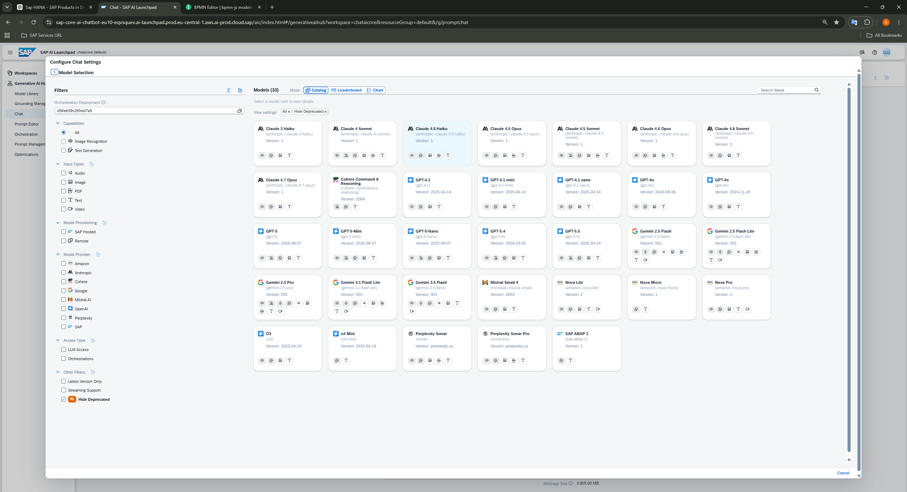
Prompt template evidence showing complaint input fields and structured response testing.
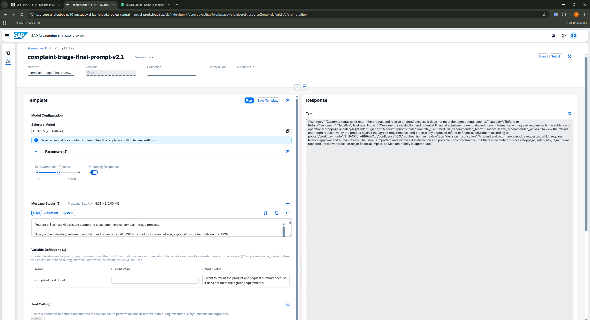
Saved prompt template evidence for the complaint triage prompt.
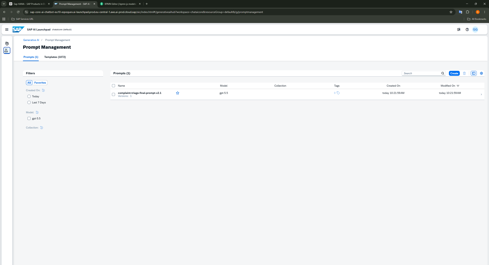
Orchestration evidence showing execution trace and response handling context.
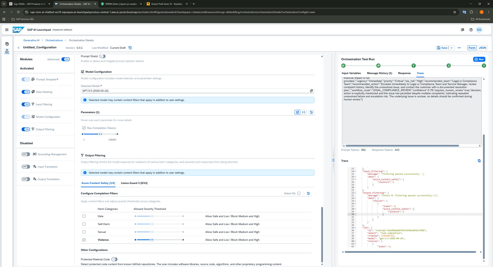
Complaint routing process workflow built in SAP Build Process Automation.
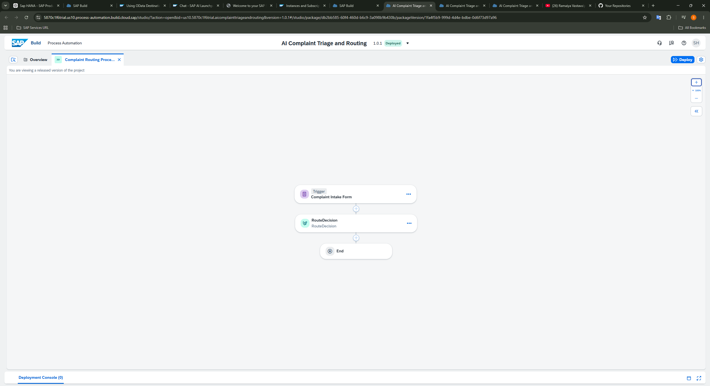
Decision-table routing evidence for workflow path selection.
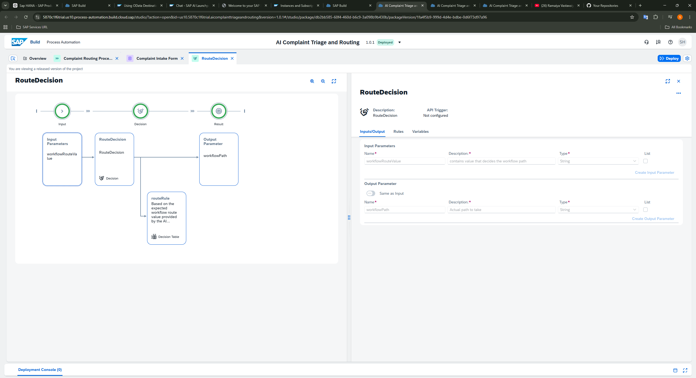
Monitoring evidence showing process and workflow execution status.
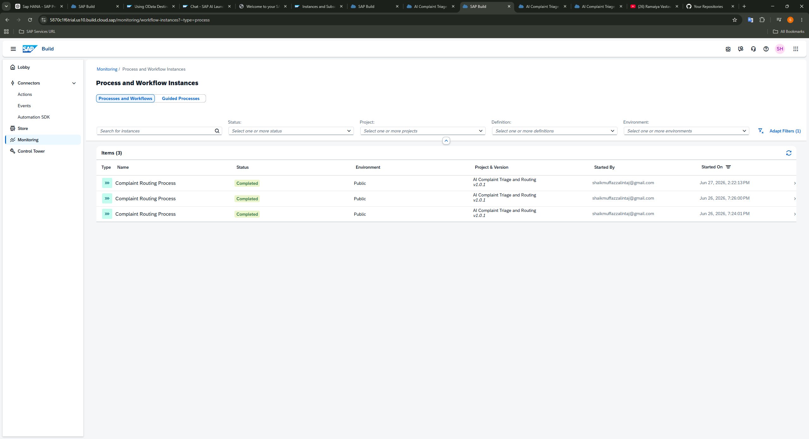
ERP trial environment used as the process-context layer for complaint handling.
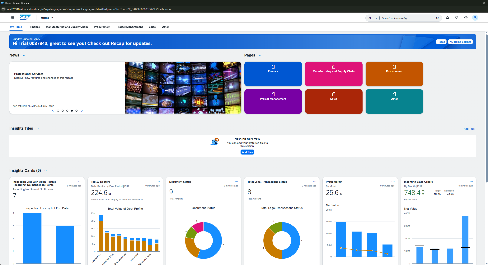
Finance and receivables context for billing complaints, disputes, and account follow-up.
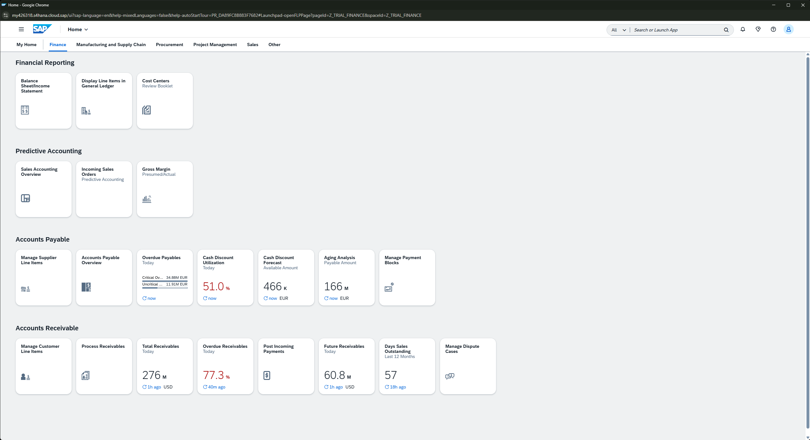
Sales order context for delivery complaints and order fulfilment follow-up.
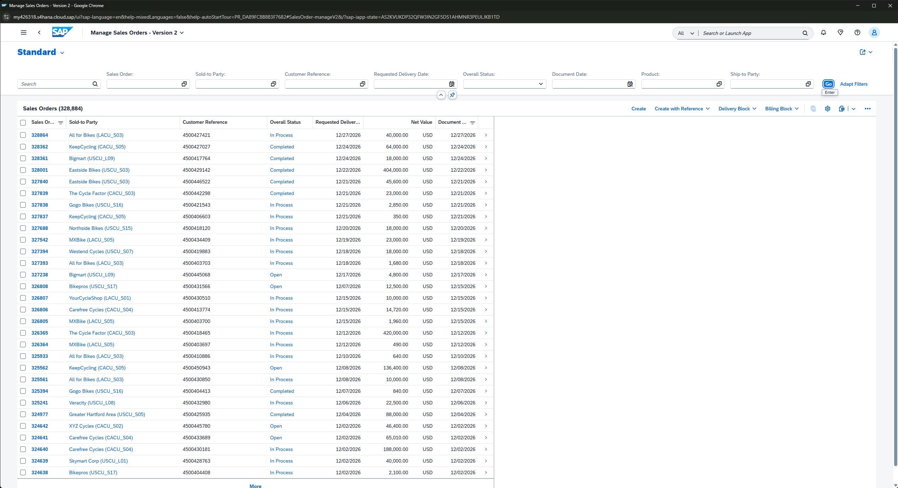
Dispute-management context for billing escalation and customer finance issues.
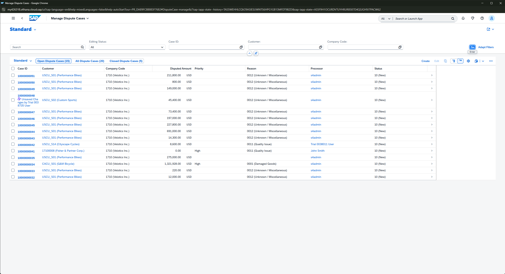
SAP S/4HANA was not integrated live with SAP Build in Phase 1. The S/4HANA screenshots are used as ERP process-context evidence to show where AI-routed complaints could be handled in a real enterprise setup.
Limitations and Roadmap
Resume-ready summary
{kind=link}
{kind=link}
{kind=link}
{kind=link}
{kind=link}
{kind=link}
{kind=link}
{kind=link}
{kind=link}
{kind=link}
{kind=link}